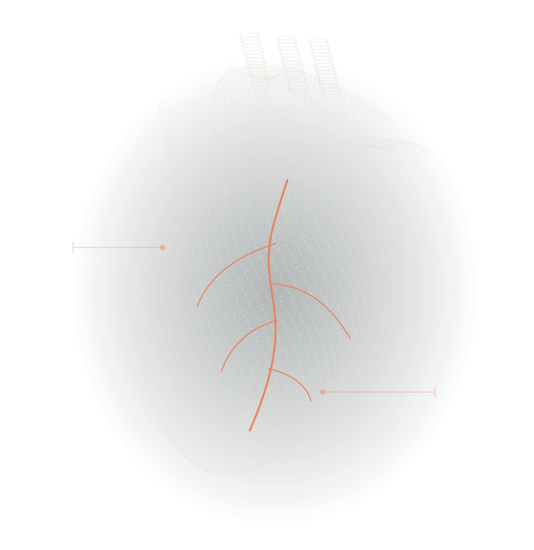

Imaging AI · Heart failure
A calcium scan.
A calcium scan.
A wider view of risk.
AI-derived cardiac chamber ratios from coronary calcium scans were associated with future heart failure.
Explore the studyHuman health is written in many signals.
We bring them together.

We connect clinicians, scientists, and engineers around a shared question: what can the data we already collect reveal about the disease we hope to prevent?
Imaging. ECGs. Clinical history. Environment. Different perspectives become a more complete picture of cardiovascular health.
AI-derived cardiac chamber ratios from coronary calcium scans were associated with future heart failure.
Explore the studyECG-GPT generates diagnostic text from 12-lead ECG images, with evaluation across multiple countries.
Inside the researchRetinal vascular features helped stratify cardiovascular risk in people with chronic kidney disease.
Inside the researchSelect a perspective to explore what it can reveal.
 ILLUSTRATIVE VISUALIZATION
ILLUSTRATIVE VISUALIZATION
Quantifying anatomy, tissue composition, and disease burden from imaging acquired during routine care.
Explore imaging researchEarlier insight.
More precise prevention.
Better cardiovascular health.
Extracting cardiovascular and cardiometabolic phenotypes from CT, CMR, echocardiography, and retinal imaging.
Explore this programConnecting diagnoses, laboratory results, medications, and clinical text to understand health over time.
Explore this programUnderstanding how air pollution, heat, greenspace, and neighborhood conditions shape cardiometabolic health.
Explore this programLearning from ECG images, waveforms, and physiological signals to improve disease detection and prediction.
Explore this programIdentifying who may benefit from earlier assessment and more personalized preventive strategies.
Explore this programEvaluating whether computational approaches can improve clinical decisions, health equity, and care delivery.
Explore this programOur team brings together clinical medicine, computational science, engineering, and population health.
Meet the full teamBring a clinical question, a computational approach, or a new perspective. Explore collaborative research and training with C3PH.